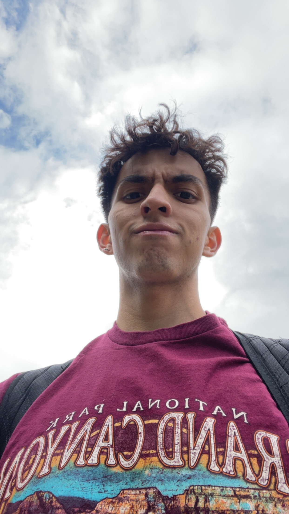
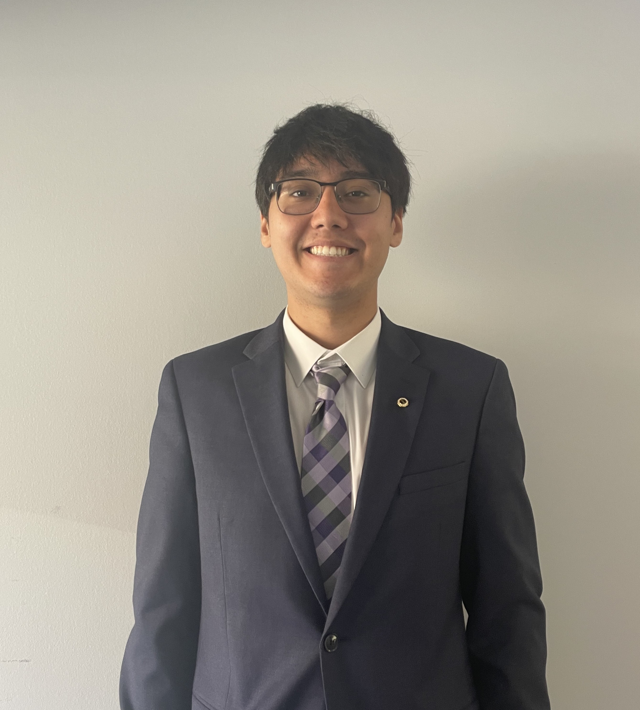
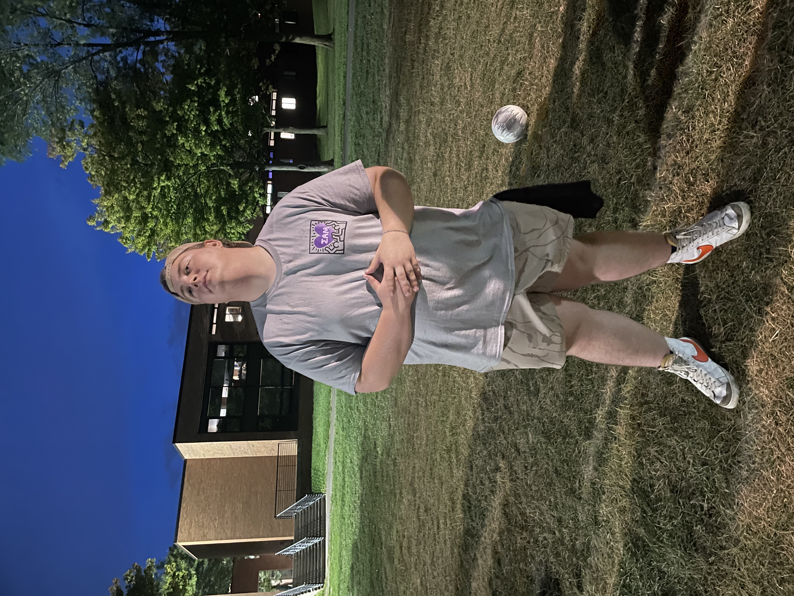

Meet The Brotherhood
Each member of Sigma Alpha Mu's leadership team plays a vital role in ensuring the chapter runs smoothly and effectively.
- Manhood
- Democracy
- Humanity
Beta Rho (BΡ)

Hayden "Double" Baugh
Second in command of the chapter following the rule of the prior. The Vice Prior manages all of the main internal aspects of the chapter such as the various chairs and positions.

Noah "Boston" Baumgaertel
Second in command of the chapter following the rule of the prior. The Vice Prior manages all of the main internal aspects of the chapter such as the various chairs and positions.Beta Sigma (BΣ)

Erik "Danger" Callejas
The Exchequer is in charge of the chapter's finances and ensures that we are on budget.
Liam "Hound" Schaefer
The Recorder is in charge of keeping our meeting minutes, as well as reporting back to our HQ monthly.Beta Tau (BT)

Joshua "Ca$happ" Abdallah
The Social Chair is in charge of setting up our general social events. This mostly includes setting up events with outside organizations.
Roman "Bear" Barnhardt
The Historian is responsible for maintaining the history of the chapter and running all chapter rituals such as Big/Little and Initiation.
Antonio "Stash" Caldaroni
The Historian is responsible for maintaining the history of the chapter and running all chapter rituals such as Big/Little and Initiation.
Ethan "Two-Time" Carver
The Historian is responsible for maintaining the history of the chapter and running all chapter rituals such as Big/Little and Initiation.
Aidan "Goblin" Cavanaugh
The Brotherhood chair's job is to foster a connection between members of the chapter. The brotherhood chair works towards instilling and maintaining that spirit of fraternity. The major events put on by this chair do an excellent job at working towards this goal. And the smaller events, while less attended, are easily as impactful to those that do attend.
Austin "Romeo" Kunkel
The Educator is in charge of our new member process. They teach the candidates about the Fraternity's history and oversee the Big/Little Brother pairings.
Soren "Flats" Orcutt
The Risk Manager ensures that all fraternal matters are safe for all envolved.
Ozias "Binky" Verminski
The Athletic Chair is in charge of managing all of the orgs intramural teams and fantasy football
Adam "Clueless" Woldan
The Alumni Recorder's job is to build and improve our relationship with alumni, and keep a sense of brotherhood between us and those who have graduated.Beta Upsilon (BY)

Sam "Angel" Tambacas
The Philanthropy Chair's role in the chapter is to plan and carry out events to spread awareness and support various causes by donating funds we raise from these events. The main organizations we support and donate to are The Judy Fund, The Make-A-Wish Foundation, and Rochester Regional Health.Beta Phi (BΦ)
Kaden "Oyster" Boyle
The mental health chair is responsible for giveing presentations on mental health and wellness as well as hosting events promoting mental health.
Jason "Dipper" Bradbury
The Community Service Chair position is in charge of tracking and assigning community service hours, as well as planning some of our smaller community service events.
Ari "Softie" Hollingsworth
The Sergeant at Arms is concerned with keeping order at meeting and serves as the chapter parliamentarian.
Pratyush "Temperance" Karthikeyan
The mental health chair is responsible for giveing presentations on mental health and wellness as well as hosting events promoting mental health.
David "Rooftop" Lanuti
The Recruitment Chair's job is to lead our recruitment of new members, both during rush month and throughout the semester.
Kyle "Irish" Long
The mental health chair is responsible for giveing presentations on mental health and wellness as well as hosting events promoting mental health.
Ryan "Honey" Thompson
The Public Relations Chair is responsible for running the chapter's social media accounts as well as maintaining robust relationships with other organizations on campus.Beta Chi (BX)

Ricky "Reina" Flores
3rd Year Electrial Engineering Technology Major
Gavin "Whiplash" Komoda
The Inclusion Diversity Equity and Access Chair is responsible for giving presentations to help improve the cultural understanding of the chapter. They are also responsible for hosting events to broaden the campuses cultural horizons.